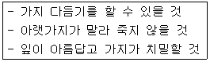
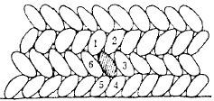

조경기능사 (2002-04-07 기출문제)
1과목: 조경일반
1. 동양식 정원과 관련이 없는 것은?
- 음양 오행설
- 자연숭배
- 신선설
- 인물중심
(정답률: 90%)

2. 다음 조경의 대상 중 자연적 환경요소가 가장 빈약한 곳은?
- 도시조경
- 명승지, 천연기념물
- 도립공원
- 국립공원
(정답률: 87%)
3. 사대부나 양반계급들이 꾸민 별서 정원은?
- 전주의 한벽루
- 수원의 방화수류정
- 담양의 소쇄원
- 의주의 통군정
(정답률: 86%)
4. 유럽 여러나라에서 각 나라의 특성에 맞는 정원양식이 크게 발달한 시기는 어느 시대 부터인가?
- 암흑시대
- 르네상스 전성기
- 고대 이집트 시대
- 세계 1차 대전이 끝난 후
(정답률: 90%)
5. 우리나라 후원양식의 정원에 설치되는 정원시설물이 아닌 것은?
- 장대석
- 괴석이나 세심석
- 장식을 겸한 굴뚝
- 둥근 연못
(정답률: 66%)
6. 장식분을 줄지어 배치했을 때의 아름다움은?
- 조화미
- 균형미
- 반복미
- 대비미
(정답률: 75%)
7. 정원에 소규모 냇물의 흐름을 조성코저 한다면 이는 조경의 어떤 요소에 해당되는가?
- 방향
- 선
- 점
- 운동
(정답률: 70%)
8. 골프 코오스 중 출발 지점을 무엇이라 하는가?
- 티이(Tee)
- 그리인(Green)
- 페어웨이(Fair way)
- 러프(Rough)
(정답률: 95%)
9. 제도기구를 사용하여 설계자의 의사를 선, 기호, 문장 등으로 제도 용지에 표시하는 일을 무엇이라 하는가?
- 설계
- 계획
- 제도
- 제작
(정답률: 79%)
10. 다음은 조경미의 설명이다. 틀린 것은?
- 질감이란 물체의 표면을 보거나 만지므로 느껴지는 감각을 말한다.
- 통일미란 개체가 특징있는 것으로 단순한 자태를 균형과 조화속에 나타내는 미이다.
- 운율미란 연속적으로 변화되는 색채, 형태, 선, 소리 등에서 찾아볼 수 있는 미이다.
- 균형미란 가정한 중심선을 기준으로 양쪽의 크기나 무게가 보는 사람에게 안정감을 줄 때를 말한다.
(정답률: 72%)
11. 다음은 조경계획 과정을 나열한 것이다. 가장 바른 순서로 된 것은?
- 기초조사 - 식재계획 - 동선계획 - 터가르기
- 기초조사 - 터가르기 - 동선계획 - 식재계획
- 기초조사 - 동선계획 - 식재계획 - 터가르기
- 기초조사 - 동선계획 - 터가르기 - 식재계획
(정답률: 60%)
12. 레크리에이션 계획에 있어서 과거의 참가 사례를 토대로 미래의 참여 기회를 유추하여 계획하는 접근 방법은?
- 자원접근방법
- 활동접근방법
- 경제접근방법
- 행태접근방법
(정답률: 50%)
13. 18세기 후반 낭만주의 사조와 함께 영국에서 성행하였던 정원양식은?
- 중정식 정원
- 정형식 정원
- 풍경식 정원
- 후원식 정원
(정답률: 85%)
14. 다음 중 풍경식 정원에서 요구되는 계단의 재료는 어느 것이 가장 좋겠는가?
- 콘크리트 계단
- 벽돌 계단
- 통나무 계단
- 인조목 계단
(정답률: 93%)
15. 고대 그리이스에 만들어졌던 광장의 이름은?
- 아트리움
- 길드
- 무데시우스
- 아고라
(정답률: 85%)
2과목: 조경재료
16. 봄에 강한 향기를 지닌 꽃이 피는 나무는?
- 치자나무
- 서향
- 불두화
- 백합나무
(정답률: 76%)
17. 다음 수종 중 관목에 해당하는 것은?
- 백목련
- 위성류
- 층층나무
- 매자나무
(정답률: 55%)
18. 잔가지 퍼짐이 가장 아름다운 나무는?
- 느티나무
- 위성류
- 일본목련
- 모과나무
(정답률: 68%)
19. 맹아력이 가장 약한 나무는?
- 리기다소나무
- 쥐똥나무
- 능수벚나무
- 히말라야시이더
(정답률: 64%)
20. 목재를 가공해 놓으면 무게가 있어서 보기 좋으나 쉽게 썩는 결점이 있다. 정원 구조물을 만드는 목재 재료로 가장 좋지 못한 것은?
- 소나무
- 밤나무
- 낙엽송
- 라왕
(정답률: 71%)
21. 다음 중 재료의 강도에 영향을 주는 요인이 아닌 것은?
- 온도와 습도
- 강도의 방향성(方向性)
- 하중속도와 하중시간
- 탄성계수(彈性係數)
(정답률: 56%)
22. 남부지방에서 새가 좋아하는 열매를 맺어 들새들의 유치에 효과적인 나무는?
- 백합나무
- 층층나무
- 감탕나무
- 벽오동
(정답률: 75%)
23. 천근성(淺根性)수종으로 짝지어진 것은?
- 독일가문비나무, 자작나무
- 전나무, 백합나무
- 느티나무, 은행나무
- 백목련, 가시나무
(정답률: 70%)
24. 도시 도로 녹지에 나무를 심고자 한다. 적당하지 않은 나무는?
- 쥐똥나무
- 벽오동
- 향나무
- 전나무
(정답률: 57%)
25. 조경용으로 외장타일, 계단타일, 야외탁자를 만드는 것은 어느 재료인가?
- 금속재료
- 플라스틱제품
- 도자기제품
- 시멘트제품
(정답률: 71%)
26. 정원수의 이용상 분류 중 보기의 설명에 해당되는 것은?

- 가로수
- 녹음수
- 방풍수
- 생울타리
(정답률: 86%)
27. 대나무를 조경 재료로 사용시 어느 시기에 잘라서 쓰는 것이 좋은가?
- 봄철
- 여름철
- 가을이나 겨울철
- 장마철
(정답률: 74%)
28. 다음 중 형상수(topiary)를 만들기에 가장 적합한 나무는?
- 주목
- 단풍나무
- 능수 벚나무
- 전나무
(정답률: 88%)
29. 다음 중 수성암(퇴적암)계통의 석재가 아닌 것은?
- 점판암
- 사암
- 석회암
- 안산암
(정답률: 72%)
30. 다음 그림과 같은 돌 쌓기에 사용되는 돌은?

- 견치석
- 마름돌
- 잡석
- 호박돌
(정답률: 80%)
31. 목재의 대표적 충해는?
- 흰개미
- 매미
- 바퀴벌레
- 흰불나방
(정답률: 88%)
32. 다음 중 다년생 초화류는?
- 국화
- 맨드라미
- 나팔꽃
- 코스모스
(정답률: 75%)
33. 표준형 벽돌의 크기는?
- 190 ×90 ×57 mm
- 190 ×90 ×60 mm
- 210 ×100 ×57 mm
- 210 ×100 ×60 mm
(정답률: 90%)
34. 흙에 시멘트와 다목적 토양개량제를 섞어 기층과 표층을 겸하는 간이포장 재료는?
- 우레탄
- 콘크리트
- 카프
- 칼라 세라믹
(정답률: 66%)
35. 인공 식물 섬의 주요 구조가 아닌 것은?
- 부유틀 및 부유체
- 수생식물 및 계류장치
- 수상방책 및 부교
- 배수판 및 방수판
(정답률: 64%)
3과목: 조경 시공 및 관리
36. 지형도에서 U자(字)모양으로 그 바닥이 낮은 높이의 등고선을 향하면 이것은 무엇을 의미하는가?
- 계곡
- 능선
- 평사면
- 사면
(정답률: 77%)
37. 배수관의 경사는 관의 지름이 작은 것일 수록 급하게 해야하는데 15cm 경우에는 어느 정도가 알맞는가?(오류 신고가 접수된 문제입니다. 반드시 정답과 해설을 확인하시기 바랍니다.)
- 1/50 ∼1/100
- 1/150 ~ 1/300
- 1/300 ~ 1/600
- 1/600 ~ 1/800
(정답률: 38%)
38. 흉고직경은 지상 몇 cm 높이의 부분을 말하는가?
- 100cm
- 110cm
- 120cm
- 130cm
(정답률: 86%)
39. 45m2에 전면 붙이기에 의해 잔디 조경을 하려고 한다. 필요한 평떼량은 얼마인가?(단, 잔디 1매의 규격은 30cm × 30cm × 3cm 이다.)
- 약 200매
- 약 300매
- 약 500매
- 약 700매
(정답률: 75%)
40. 다음 중 인공적 수형을 만드는데 적당한 수종이 아닌 것은?
- 꽝꽝나무
- 아왜나무
- 주목
- 벚나무
(정답률: 77%)
41. 수목에 거름 주는 요령 중 맞는 것은?
- 효력이 늦은 거름은 늦가을부터 이른봄 까지의 사이에 준다.
- 효력이 빠른 거름은 3월경 싹이 틀때, 꽃이 졌을 때, 그리고 열매따기 전 여름에 준다.
- 산울타리는 수관선 바깥쪽으로 방사상으로 땅을 파고 거름을 준다.
- 속효성 거름주기는 늦어도 11월초 이내에 이루어지 도록 한다.
(정답률: 55%)
42. 줄기의 썩은 부분을 도려내고 구멍에 충진 수술을 하고자 한다. 가장 효과적인 시기는?
- 2월이전
- 4월 이후
- 11월 이후
- 12월 이후
(정답률: 69%)
43. 쇠약해지거나 말라 죽어가는 나무는 지상부에 다음과 같은 변화가 생긴다. 변화현상에 해당되지 않는 것은?
- 건강한 나무에 비해 가지가 짧아지고 잎이 작아진다.
- 잎이 급히 말라들며 빨리 떨어진다.
- 묵은 가지가 아닌 가지까지 말라 죽어간다.
- 수피에 생기가 없어지고 윤기가 돌지 않는다.
(정답률: 42%)
44. 눈이 트기전 가지의 여러 곳에 자리잡은 눈 가운데 필요로 하지 않은 눈을 따버리는 작업을 무엇이라 하는가?
- 순자르기
- 열매따기
- 눈따기
- 가지치기
(정답률: 85%)
45. 다음 중 소나무류를 가해하는 해충으로서 가장 관련이 적은 것은?
- 솔나방
- 미국흰불나방
- 소나무좀
- 솔잎혹파리
(정답률: 82%)
46. 조경수목의 병해와 방제법이 올바른 것은?
- 빗자루병 - 배수구 설치
- 그을음병 - 마라톤 살포
- 잎녹병 - 메프제 살포
- 흰가루병 - 디프제 살포
(정답률: 37%)
47. 정원수의 가지다듬기 목적이 아닌 것은?
- 정원수를 아름다운 모습으로 만든다.
- 병.해충의 피해를 적게 한다.
- 정원수를 인간생활에 편리한 것으로 만든다.
- 토양에 대한 적응성을 높게 한다.
(정답률: 59%)
48. 조경수목의 약제 살포 요령으로 적당치 않은 것은?
- 바람이 부는 방향에서 등지고 살포해야 한다.
- 방제효과를 높이기 위해 약제의 희석 배율을 높여서 살포해야 한다.
- 작업 중에는 음식을 먹거나 담배를 피우면 안된다.
- 바람이 없는 날에 뿌리는 것이 좋다.
(정답률: 89%)
49. 덩굴 식물을 올리기 위한 시설이 아닌 것은?
- 퍼어걸러
- 테라스
- 아아치
- 트렐리스
(정답률: 76%)
50. 암거 배수란 어느 것을 말하는가?
- 강우시 표면에 떨어진 물을 처리하기 위한 배수 시설
- 땅 밑에 돌이나 관을 묻어 배수시키는 시설
- 지하수를 이용하기 위한 시설
- 돌이나 관을 땅에 수직으로 뚫어 설치하는 것
(정답률: 80%)
51. 조경 시공시 지형의 높고 낮음을 주로 측정하는 측량기는?
- 평판
- 컴퍼스
- 레벨
- 트렌싯
(정답률: 80%)
52. 화단에 꽃을 갈아 심을 때의 요령이다. 잘못 설명된 것은?
- 화단의 변두리로부터 중앙부로 심어간다.
- 흙이 밟혀 굳어지지 않도록 널판지를 놓고 심는다.
- 꽃이 피기 시작하는 것을 심는다.
- 만개 되었을 때를 생각하여 적당한 간격으로 심는다.
(정답률: 78%)
53. 양탄자 화단에 적합하지 않은 화초는?
- 팬지
- 앨리섬
- 색비름
- 금잔화
(정답률: 57%)
54. 목재의 성질을 설명한 것이다. 틀리게 설명된 것은?
- 함수율이 낮을수록 강도가 높아진다.
- 비중이 높을수록 강도가 높다.
- 열전도율은 콘크리트, 석재 등에 비하여 높다.
- 연소가 쉽고, 해충의 피해가 높다.
(정답률: 70%)
55. 콘크리트 포장면이 파괴되어 보수하려 한다. 내용이 옳지 않은 것은?
- 파괴면을 넓게 쪼아내고 깨끗이 청소한다.
- 보수할 자리를 건조시키고 잡물질이 들어가지 않도록 한다.
- 시멘트 풀을 바른 후 콘크리트를 친다.
- 습윤양생을 해준다.
(정답률: 41%)
56. 배수공사 중 지하층 배수와 관련된 내용으로 틀린 것은?
- 지하층 배수는 속도랑을 설치해 줌으로써 가능하다.
- 암거배수의 배치형태는 어골형, 평행형, 빗살형, 부채살형, 차단법, 자유형 등이 있다.
- 속도랑의 깊이는 심근성보다 천근성 나무를 식재할 때 더 깊게 한다.
- 큰 공원에서는 자연 지형에 따라 배치하는 자연형 배수방법이 많이 이용된다.
(정답률: 81%)
57. 콘크리트의 양생을 돕기 위하여 추운 지방이나 겨울에 시멘트에 섞는 재료는 어느 것인가?
- 염화칼슘
- 생석회
- 요소
- 암모니아
(정답률: 83%)
58. 속빈 시멘트 벽돌을 압축강도에 따라 구분하였다. 옳은 것은?
- 1급블록 : 30kg/cm2 이상
- 2급블록 : 70kg/cm2 이상
- 3급블록 : 90kg/cm2 이상
- 중량블록 : 비중이 1.8 이상인 블록
(정답률: 59%)
59. 옥외 장치물에서 벤치, 퍼어걸러, 정자 등의 시설은 무슨 시설인가?
- 휴게 시설
- 안내 시설
- 편익 시설
- 관리 시설
(정답률: 86%)
60. 충분한 계획과 자료를 수집하고 넓은 지식과 경험을 바탕으로 시방서 작성과 공사 내역서를 작성하는 자는?
- 설계자
- 감리원
- 수급인
- 현장대리인
(정답률: 80%)